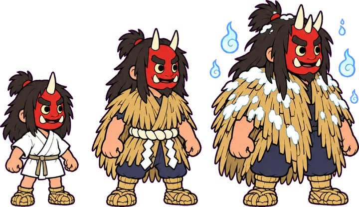

大晦日、山から里へ。
泣ぐ子は、いねがぁ

雪道を跳んで、家々の戸口へ。
餅を食べたら、ひとまわり大きく。
移動とジャンプだけで遊ぶ、全20面。面ごとにお札が3枚。
今夜は、どの道へ。
各地の5面目を終えると、次の土地へ。
札は ●早駆け ●福集め ●無傷 の順。別々の挑戦で取ったぶんも積み上がる。
1-1
● ちび
残 3
米 0/6
能力なし
0.0秒
早福無
端末に保存できません。この画面では記録を保持します。
跳んで、戸口へ。
← → / A D：移動 Space / ↑ / W / Z：ジャンプ
短く押すと低く、長く押すと高く。
R：やり直し Esc：面えらび
餅で ちび → なまはげ → 荒鬼。荒鬼は二段ジャンプ。
カラス・野犬・雪うさぎ・雪かきイノシシは上から踏める。続けて踏むと点が倍になる。
風呂敷（滑空）と駆け鈴（速く走る）は持てるのはひとつだけ。被弾すると失う。
面ごとの目標は3つ。早駆け（目標時間内）・福集め（米俵6個と隠し餅）・無傷（被弾もミスもなし）。
戸口に触れればクリア。米俵20個で残機がひとつ増える。
記録と音設定はこの端末だけに保存します。